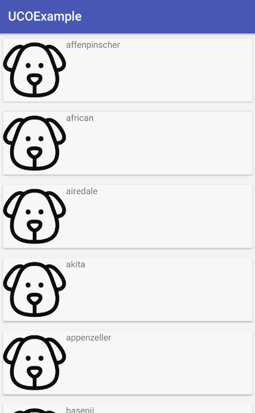

Haciendo una petición al servidor
Vamos a nuestra actividad, y vamos a comenzar a traer datos de la api. Para empezar, debemos asignar un objeto de cliente Retrofit que hemos creado en anteriores pasos:
private DogClient client;
Vamos a crear un constructor, donde vamos a instanciar el objeto:
public MainActivity() {
client = new DogClient();
}
Y ahora en nuestro método getDogBreeds hacemos la petición con Retrofit:
private void getDogBreeds() {
client.getDogService().getBreeds().enqueue(new Callback<BreedWrapper>() {
@Override
public void onResponse(Call<BreedWrapper> call, Response<BreedWrapper> response) {
}
@Override
public void onFailure(Call<BreedWrapper> call, Throwable t) {
}
});
}
Como se puede ver, tenemos dos métodos internos. Uno es onResponse que se dispará cuando la llamada sea éxito (da igual si el código HTTP es 200 o 404) y la otra cuando falle por alguna razón como que la url no es válida o no tenemos red.
Ahora vamos a nuestro método onCreate() y añadimos la llamada a nuestro método:
@Override
protected void onCreate(Bundle savedInstanceState) {
super.onCreate(savedInstanceState);
setContentView(R.layout.activity_main);
ButterKnife.bind(this);
getDogBreeds();
}
Cuando lo tengamos, lanzamos la app en nuestro dispositivo o simulador.
Ups!
Tenemos un fallo! Cuando vamos a realizar según que acciones, tenemos que habilitar permisos o hacer que el usuario nos habilite. En este caso, nos falta el permiso de red, así que para poder habilitarlo vamos a nuestro AndroidManifest.xml y añadimos la siguiente línea justo encima del tag
<uses-permission android:name="android.permission.INTERNET" />
Si ahora volvemos a lanzar la app, ya no nos dará el fallo.
Rellenando el RecyclerView
Primero, debemos declarar el objeto del adapter:
private DogListAdapter adapter;
Y lo instanciamos en el método de setAdapter
private void setAdapter() {
adapter = new DogListAdapter();
}
También tenemos que instanciar el RecyclerView:
private void setRecyclerView() {
dogList.setLayoutManager(new LinearLayoutManager(this));
dogList.setAdapter(adapter);
}
Hay dos parámetros básicos:
-
Layout Manager: básicamente es como el RecyclerView va a mostrar los datos. En nuestro caso queremos un listado linear (por defecto es vertical), pero puede ser un GridLayout o incluso en varias columnas.
-
Adaptador: es el adaptador que le va a proveer los datos para mostrar.
Por último, queda añadir en el onResponse lo que queremos hacer:
@Override
public void onResponse(Call<BreedWrapper> call, Response<BreedWrapper> response) {
adapter.setDogBreeds(response.body().getBreeds());
}
Si lanzamos la app nos debe de salir una primera versión de nuestro listado.
